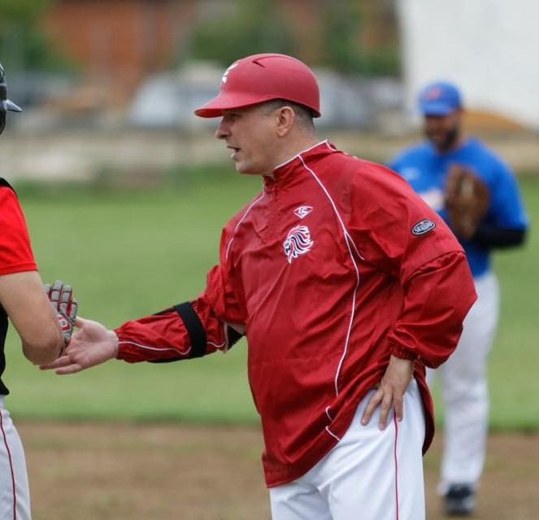
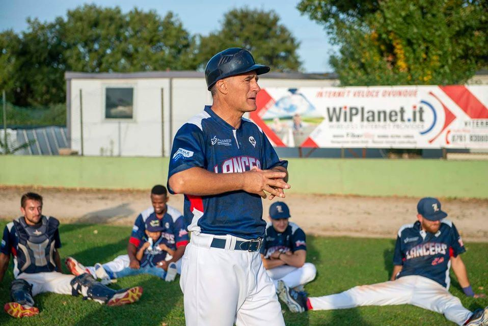

I Lancers BC comunicano che il coach Rosellini non farà parte dello staff tecnico 2020, Marco dopo due grandi stagioni coronate con la soddisfazione della promozione ha deciso di prendersi un pò di tempo per se e la sua famiglia.
La società, lo staff tecnico ed i giocatori lo ringraziano per il lavoro svolto sperando di poterlo vedere sul campo di Via Livornese quando possibile.
Considerato l’impegno che la categoria comporta era necessario trovare un valido sostituto; con grande entusiasmo comunichiamo che sarà Federico Pucci il nuovo coach per il prossimo campionato di Serie A2.
Fiorentino classe 1972 Federico ha mosso i primi passi nel baseball nello storico Quasar Firenze per poi esordire con i colori del Padule in Serie B.
Nel 1998 il passaggio al Chianti dove è rimasto fino al 2004, anno di esordio in Serie A2.
L’avventura da tecnico inizia nel 2008 con l’Under 21 della Fiorentina Baseball con i quali conquista il primo posto nel girone toscano.
Per alcuni anni si muoverà tra giovanili e Serie C/C2 con la maglia gigliata fino al 2014 ed il passaggio allo Junior Firenze.
Nel 2017 il passaggio ad un palcoscenico più importante con il ritorno alla Fiorentina in Serie A2, nella stagione successiva in Serie B contribuirà alla promozione e quindi al ritorno nella serie cadetta.
La passata stagione è ancora nello staff gigliato al fianco di Fedi e Neri, una stagione sfortunata per la squadra schierata ma che termina con la salvezza e la permanenza in A2.
Per Federico, dunque, è la prima esperienza fuori Firenze, siamo sicuri che troverà nei Lancers BC un ambiente sereno dove potrà far crescere e crescere a sua volta, da tutti noi un caloroso benvenuto nella nostra grande famiglia!
